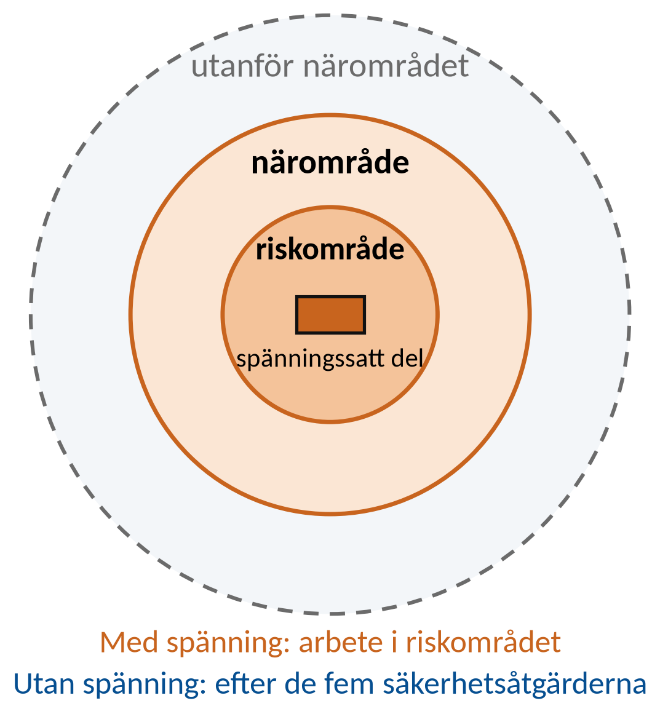
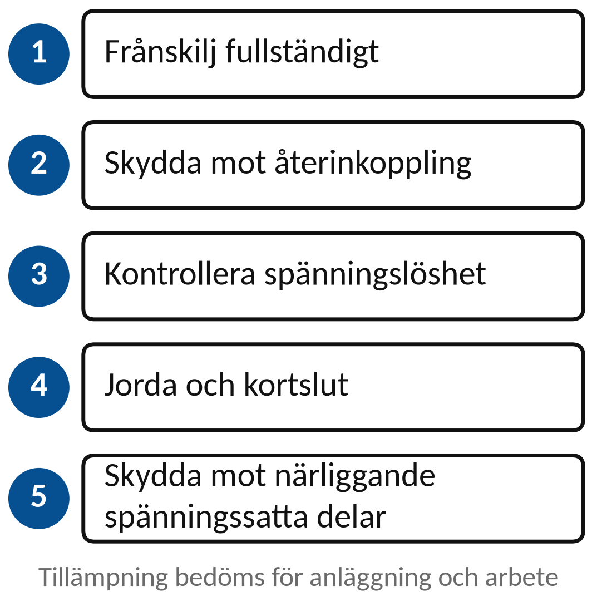
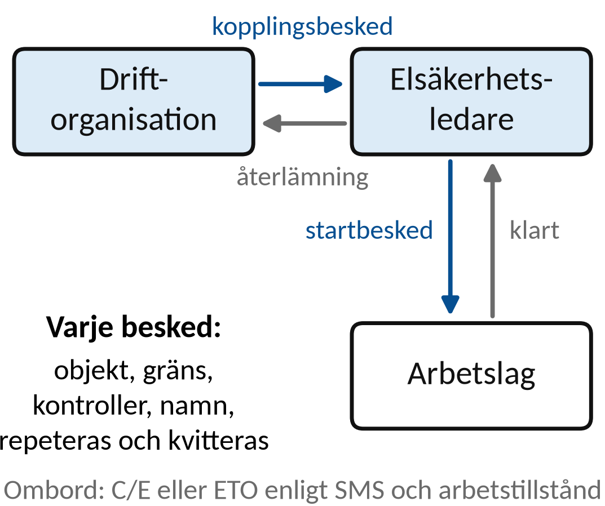
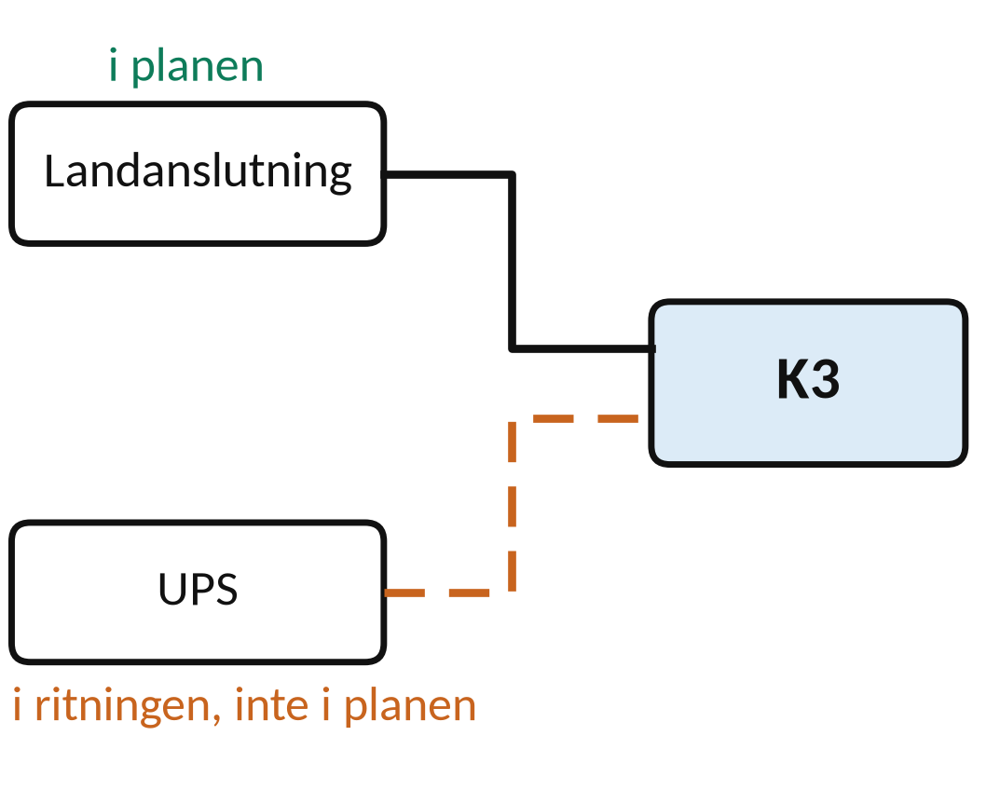

Vecka 42 · Del 2 av 3
Del 2: Regler, ansvar och arbetsmetoder
1 Översikt
Det här ska du kunna
- Skilja föreskrift, standard och arbetsanvisning.
- Knyta arbetsmetod och ansvar till ett avgränsat arbetsfall.
Fundera först: Är samma regelverk automatiskt tillämpligt i en fabrik och ombord på ett fartyg? Svaret finns i teorin nedan.
Så gör du
- Läs teorin ett avsnitt i taget (7 korta avsnitt). Sist i varje avsnitt står vilka övningar du kan göra direkt.
- Följ exemplen med papper och räknare, steg för steg. Gissa nästa steg innan du läser det.
- Gör övningarna 2.1–2.10. Fastnar du: Ledtråd 1 visar vilket samband du behöver och var i teorin det förklaras. Ledtråd 2 visar hur du börjar och Ledtråd 3 exemplet som räknar samma sorts uppgift med andra tal. Öppna facit när du har ett eget svar.
- Lämna in veckans uppgifter: Veckans inlämning.
Så skriver du en lösning som går att följa
1. Givet och sökt
Skriv av värden, enheter och vad du ska bestämma.
2. Samband och villkor
Välj formel eller princip. Kontrollera koppling, driftfall och antaganden.
3. Uträkning och kontroll
Omvandla enheter, sätt in värden och tolka resultatet.
I resonemangsfall: koppla observation till en motiverad slutsats.
2 Teori
Ett avsnitt i taget: öppna det, läs, och gör sedan övningarna som står sist i avsnittet. Formeln bredvid rubriken är det viktigaste i avsnittet.
1Underlag för regelval
Föreskrift har ett definierat, bindande tillämpningsområde.
Standard kan beskriva tekniska och organisatoriska metoder.
Lokal arbetsanvisning preciserar organisation och arbete.
Dokumentets nummer, utgåva och tillämpning behövs för en spårbar hänvisning.
Öva nu: Övning 2.10
2Reglernas olika uppgifterTillämpningsområdet måste vara känt
Föreskrifter anger bindande krav inom sitt tillämpningsområde.
Standarder och anvisningar ger tekniskt och organisatoriskt stöd.
Tillämpningsområdet måste vara känt
Fartygets kategori, trafik och byggnadsdata påverkar regelvalet.
En standardhänvisning ersätter inte bedömningen.
Öva nu: Övning 2.1
3SS-EN 50110-1 och ESAHär ges kursöversikt, ingen ESA-certifiering
SS-EN 50110-1 utgåva 4:2024 behandlar drift och arbete.
EBR ESA 2026 gäller från 29 maj 2026 inom sitt system.

Här ges kursöversikt, ingen ESA-certifiering
SS-EN 50110-1: tre metoder (utan spänning, med spänning, nära spänning).
ESA: fyra metoder (kompletterar med arbete utanför närområde).
Öva nu: Övning 2.2, Övning 2.3
4Fem säkerhetsåtgärderFrånskiljning och skydd mot återinkoppling
Arbete utan spänning kräver en planerad följd av åtgärder.
Varje åtgärds tillämpning avgörs för anläggningen och arbetet.

Frånskiljning och skydd mot återinkoppling
Spänningslöshetskontroll, jordning och kortslutning, skydd mot närliggande spänningssatta delar.
Öva nu: Övning 2.4
5Roller och kommunikationUtsedd person, avgränsat uppdrag, tydligt besked
Elsäkerhetsledaren leder säkerheten för det aktuella arbetet.
Driftorganisationen samordnar drift och kopplingsåtgärder.

Utsedd person, avgränsat uppdrag, tydligt besked
Planens ”kopplingsansvarig” måste preciseras i lokal organisation.
Namn, funktion och överlämning ska vara entydiga.
Öva nu: Övning 2.5, Övning 2.6
6Regler för fartygFartygstyp och tillämpningsområde styr
Transportstyrelsen listar olika regelverk för olika fartyg.
Exempel är TSFS 2019:4 och TSFS 2017:26.
Fartygstyp och tillämpningsområde styr
IEC 60092 behandlar elinstallationer på fartyg.
SS-EN 50110-1 har inte utvecklats specifikt för sjögående fartyg.
Öva nu: Övning 2.7, Övning 2.8
7Avgränsning före beslutRätt objekt och alla berörda energikällor
Arbetsområdet kan påverkas av fler än en matning.
Reservkraft, UPS och lagrad energi ingår i kartläggningen.
Rätt objekt och alla berörda energikällor
Arbetsberedningen ska ange vad som får påbörjas, av vem och under vilka verifierade förutsättningar.
Öva nu: Övning 2.9
3 Exempel
Följ exemplet steg för steg med papper och räknare. Försök själv med nästa steg innan du läser det. Övningarna använder samma metod med andra tal.
E1Regelval utan gissning
Ett fartyg behöver ändrad elektrisk utrustning. Underlaget anger varken fartygstyp eller byggnadsår.
Tillämplighet måste kontrolleras före hänvisning
- Begär fartygstyp, storlek, trafik och byggnads-/ombyggnadsdata.
- Matcha uppgifterna mot föreskriftens tillämpningsområde.
- Dokumentera aktuell version och relevant, kontrollerat avsnitt.
Ett standardnamn ensamt visar inte vilka bindande krav som gäller för ändringen.
E2Två matningsvägar
Arbete planeras på K3. Landanslutningen är beskriven, men ritningen visar också ett UPS-spår.

Arbetsgräns omfattar alla berörda energikällor
- Observation: UPS-vägen finns i ritningen men saknas i planen.
- Osäkerhet: K3 kan ha en ytterligare möjlig matning.
- Berörd start väntar tills vägen och skyddsåtgärderna verifierats.
Planen ska ange ansvarig, utförda kontroller och ett tydligt besked för det avgränsade arbetet.
4 Övningar
Räkna på papper. Bocka av en övning när du har kontrollerat ditt svar mot facit. Avbockningen sparas i den här webbläsaren.
Övning 2.1: Föreskrift eller standard
Vad är skillnaden mellan en myndighetsföreskrift och en teknisk standard när du ska ta reda på vilka regler som gäller?
Givet: Vilka dokument som gäller beror på objekt, arbete och eventuella hänvisningar eller avtal.
Ledtråd 1: vilken princip?
Utgå från Föreskrift, standard och lokal anvisning. Läs Teori 2: Reglernas olika uppgifter.
Ledtråd 2: hur börjar jag?
Föreskriften är bindande inom sitt område. En standard kan ge en teknisk metod, och en lokal anvisning beskriver hur arbetet görs. Jämför vad dokumenten är till för och förklara varför du först måste kontrollera tillämpningsområdet.
Ledtråd 3: steg för steg
1) Vem ger ut en föreskrift, och är den bindande? 2) Vem ger ut en standard, och vad är den till för? 3) Varför måste du först ta reda på vad arbetet och objektet gäller innan du vet vilket dokument som styr? Skriv ett ord för varje dokument: ”krav” eller ”metod”.
Facit
Föreskriften är bindande inom sitt område. Standarden beskriver en teknisk metod eller nivå som kan användas för att uppfylla kraven. Tillämpningsområdet avgör vilka dokument som gäller.
Övning 2.2: Aktuell utgåva
En äldre pärm hänvisar till SS-EN 50110-1 utgåva 3:2013. Vilken utgåva bygger den här boken på?
Givet: Enligt SEK löpte övergångstiden för utgåva 3 ut den 29 maj 2026.
Ledtråd 1: vilken princip?
Utgå från Utgåvans grund: SS-EN 50110-1 utgåva 4:2024. Läs Teori 3: SS-EN 50110-1 och ESA.
Ledtråd 2: hur börjar jag?
Utgåvenumret visar vilken version det är. En äldre utgåva kan ha slutat gälla. Jämför pärmens utgåva med den aktuella och kontrollera även de lokala anvisningarna.
Ledtråd 3: steg för steg
1) Leta upp utgåvenumret och året i hänvisningen. 2) Jämför med den utgåva kursen hänvisar till. 3) Gäller den äldre utgåvan fortfarande efter övergångstiden? 4) Vilka lokala dokument behöver du också kontrollera?
Facit
SS-EN 50110-1 utgåva 4:2024. Utgåva 3:2013 är inaktuell efter 29 maj 2026. Kontrollera också lokala anvisningar.
Övning 2.3: Arbetsmetoder
Nämn de fyra arbetsmetoderna i ESA 2026.
Givet: Namnen följer EBR ESA 2026. Boken ger ingen ESA-behörighet.
Ledtråd 1: vilken princip?
Utgå från Metoderna skiljer sig i hur nära spänning arbetet sker. Läs Teori 3: SS-EN 50110-1 och ESA.
Ledtråd 2: hur börjar jag?
Metoderna skiljer sig i hur nära spänningsförande delar man arbetar och vilka säkerhetskrav som gäller. Ange de fyra namnen. Vid ett verkligt arbete måste valet av metod motiveras.
Ledtråd 3: steg för steg
1) Metoderna skiljer sig i om anläggningen är spänningssatt och hur nära spänningsförande delar arbetet görs. 2) Två av metoderna handlar om själva spänningen. 3) Två handlar om avståndet till spänningsförande delar. Leta upp namnen i presentationen eller ESA och sortera dem i de två paren.
Facit
Arbete utan spänning, arbete med spänning (AMS), arbete inom närområde (arbete nära spänning) och arbete utanför närområde. Medan SS-EN 50110-1 har tre metoder, definierar ESA även arbete utanför närområde som en egen metod med specifika krav på riskhantering gentemot intilliggande anläggningsdelar.
Övning 2.4: Säkerhetsåtgärder
Varför räcker det inte att frånskilja när du förbereder ett arbete utan spänning?
Givet: Jordning och kortslutning görs när anläggningen, arbetsmetoden och gällande krav kräver det.
Ledtråd 1: vilken princip?
Utgå från Frånskiljning är en del av flera åtgärder. Läs Teori 4: Fem säkerhetsåtgärder.
Ledtråd 2: hur börjar jag?
Skydd mot återinkoppling, spänningslöshetskontroll och skydd mot närliggande delar ingår i planeringen. Förklara vilken risk som kvarstår efter enbart frånskiljning. Knyt varje risk till ytterligare åtgärd.
Ledtråd 3: steg för steg
1) Vad gör frånskiljningen, och vad gör den inte? 2) Tänk på tre risker efteråt: att någon slår till igen, att spänningen inte är kontrollerad och att delar i närheten är spänningssatta. 3) Skriv en åtgärd till varje risk.
Facit
Efter frånskiljning kan någon tillkoppla igen, spänningslösheten är inte kontrollerad och närliggande delar kan vara spänningssatta. Skydd mot tillkoppling, spänningslöshetskontroll, jordning och kortslutning där det krävs, samt skydd mot närliggande delar behövs.
Övning 2.5: Otydligt besked
”Den är nog avstängd, ni kan börja” sägs via telefon. Ange två brister i beskedet.
Givet: Beskedet är: ”Den är nog avstängd, ni kan börja.” Inga kontroller nämns.
Ledtråd 1: vilken princip?
Utgå från Ett startbesked behöver entydiga uppgifter. Läs Teori 5: Roller och kommunikation.
Ledtråd 2: hur börjar jag?
Objekt, arbetsgräns, utförda kontroller, vem som ger beskedet och vem som tar emot det behöver vara klart. Ange två uppgifter som saknas och varför var och en gör att arbetet inte kan börja säkert.
Ledtråd 3: steg för steg
1) Läs beskedet ord för ord. Vilket ord visar att ingen kontroll är gjord? 2) Vad borde ett besked innehålla: objekt, gräns, kontroller, vem som ger och vem som tar emot? 3) Välj två som saknas och skriv varför var och en stoppar starten.
Facit
Två av: vilket objekt och vilken arbetsgräns som avses, vem som ansvarar, att ”nog” betyder att ingen kontroll är gjord, och vilka kontroller som faktiskt har utförts.
Övning 2.6: Rollfördelning
Ingen i en arbetsgrupp är utsedd att leda elsäkerheten. Kan ett muntligt ”alla håller koll” ersätta det?
Givet: Ingen är utsedd att leda elsäkerheten i det här arbetet. ”Alla håller koll” är den enda fördelningen av ansvar.
Ledtråd 1: vilken princip?
Utgå från Uppdrag och befogenheter måste vara utpekade. Läs Teori 5: Roller och kommunikation.
Ledtråd 2: hur börjar jag?
Elsäkerhetsledaren leder säkerheten i arbetet, och driftorganisationen samordnar drift och kopplingar. Förklara vilket beslut eller vilken samordning som annars riskerar att ingen tar hand om.
Ledtråd 3: steg för steg
1) Vilka beslut måste någon fatta: start, stopp, samordning med driften? 2) Vad händer med ett beslut som ”alla” ansvarar för? 3) Vem måste enligt metoden ha rollen? Annat fall: ett bogseruppdrag där ingen är utsedd befälhavare.
Facit
Nej. Utan utsedd elsäkerhetsledare är det ingen som har beslutet om start och samordningen med driften. Det faller mellan personer.
Övning 2.7: Regelval ombord
Du får ett fall om en elektrisk installation på ett fartyg. Vilka uppgifter behöver du innan du kan hänvisa till rätt TSFS?
Givet: Inga fartygsdata är givna. Svara därför med vilken information som behövs – gissa inte en paragraf.
Ledtråd 1: vilken princip?
Utgå från Regelval bygger på fartygsdata. Läs Teori 6: Regler för fartyg.
Ledtråd 2: hur börjar jag?
Fartygstyp, storlek, trafik, byggnadsdata och vilket system det gäller påverkar vilka föreskrifter som gäller. Lista uppgifterna och förklara hur du använder dem för att kontrollera tillämpningsområdet.
Ledtråd 3: steg för steg
1) Tänk på vad som skiljer fartyg åt i regelverket: typ, storlek, fartområde, byggår. 2) Vilket system gäller fallet? 3) Förklara hur du med de uppgifterna kontrollerar tillämpningsområdet i föreskriften. Gissa ingen paragraf.
Facit
Fartygstyp, storlek, fartområde och trafik, byggår eller byggnadsdata och vilket system som berörs. Med dem går det att kontrollera vilken föreskrift som gäller.
Övning 2.8: Gammal föreskrift
Ett dokument anger att TSFS 2014:1 gäller. Vad säger Transportstyrelsens regellista?
Givet: Dokumentet säger att TSFS 2014:1 gäller. Inget i fallet stöder det.
Ledtråd 1: vilken princip?
Utgå från Kontrollera föreskriftens status i regellistan. Läs Teori 6: Regler för fartyg.
Ledtråd 2: hur börjar jag?
Transportstyrelsens regellista visar om en föreskrift gäller eller är upphävd. Ett nytt nummer kräver ändå kontroll av tillämpningen. Ange vilken hänvisning som är inaktuell och vad som behöver verifieras i ersättningsregelverket.
Ledtråd 3: steg för steg
1) Vilken källa visar vilka föreskrifter som gäller? 2) Slå upp numret där. Är det gällande eller upphävt, och vad har ersatt det? 3) Vad måste du kontrollera i det nya regelverket innan du hänvisar till det?
Facit
TSFS 2014:1 är inte längre gällande. Den ersattes av TSFS 2017:26 om konstruktion och utrustning av fartyg. För internationell fart gäller också SOLAS kapitel II-1 del D. Kontrollera att ersättningsföreskriften gäller för just detta fartyg och arbete.
Övning 2.9: Två matningar
En fördelning kan få el från landanslutning eller generator. Planen nämner bara landanslutningen. Vilken brist finns?
Givet: Fördelningen kan matas från land eller generator. Planen nämner bara landanslutningen.
Ledtråd 1: vilken princip?
Utgå från Alla möjliga matningsvägar ingår i avgränsningen. Läs Teori 7: Avgränsning före beslut.
Ledtråd 2: hur börjar jag?
Normal matning, reservmatning och risken att spänningen kommer tillbaka påverkar samma arbetsområde. Jämför energikällorna i planen med dem i fallet och ange vad som måste läggas till innan arbetet kan börja.
Ledtråd 3: steg för steg
1) Lista alla vägar som kan ge el till fördelningen. 2) Jämför listan med planen. Vilken väg saknas? 3) Vad kan hända om den vägen inte är frånskild? 4) Vad måste planen få med för varje väg? Annat fall: en pump som kan styras både från bryggan och lokalt.
Facit
Generatorn saknas i planen och kan spänningssätta fördelningen. Planen behöver kompletteras med alla matningsvägar och hur var och en frånskiljs och låses.
Övning 2.10: Rätt hänvisning i riskbedömning
Skriv ett exempel på en hänvisning till en regel som går att kontrollera i efterhand, utan att du gissar en paragraf.
Givet: Det räcker att visa hur hänvisningen ska byggas upp. Fartygsdata eller avsnitt som saknas skrivs som öppna frågor.
Ledtråd 1: vilken princip?
Utgå från Spårbar hänvisning = dokument, version och tillämpning. Läs Teori 1: Underlag för regelval.
Ledtråd 2: hur börjar jag?
En hänvisning ska visa vilket avsnitt som är kontrollerat och varför det gäller just det här arbetet. Skriv en mall med dokument och motivering. Skriv aldrig en påhittad paragraf som om den vore fakta.
Ledtråd 3: steg för steg
1) Namnge dokumentet och utgåvan. 2) Ange avsnittet som ska kontrolleras (skriv ”kontrolleras” om du inte vet). 3) Skriv varför det gäller just det här arbetet. 4) Skriv det som saknas som en öppen fråga. Bygg texten med de fyra delarna.
Facit
Exempel: ”Dokument: [namn], utgåva [nr]. Avsnitt: [kontrolleras]. Gäller eftersom: [fartygsdata och arbete]. Öppen fråga: [det som saknas].”
Klart med delen?
Hur visar du att en regelhänvisning verkligen gäller ditt arbetsfall?
Komplettera riskbedömningen med ansvar, vald arbetsmetod och motiverad regelhänvisning. Inlämning senast 18 oktober.
5 Labben
Labben kommer sist i veckan, när du har gått igenom del 1–3. Du använder samma metod som i övningarna: räkna först, läs av, jämför och förklara.
Veckans labbar Veckans inlämning
Källor och fortsatt läsning
Studieplanen YH03151, 18 september 2026 Sjöskolans kursmaterial och originalmall
SEK: SS-EN 50110-1, utgåva 4:2024
Energiföretagen: EBR ESA 2026
Transportstyrelsen: regler för el ombord